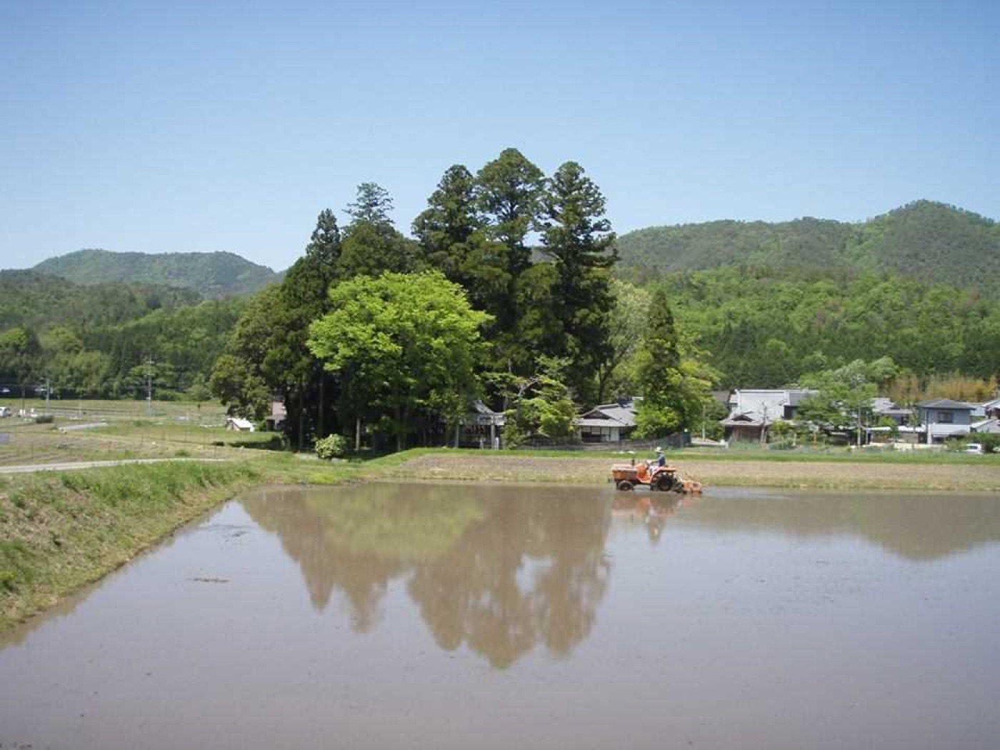
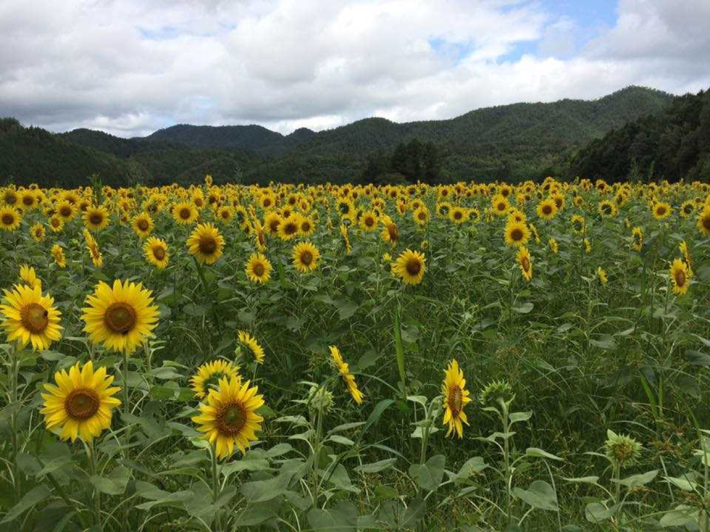
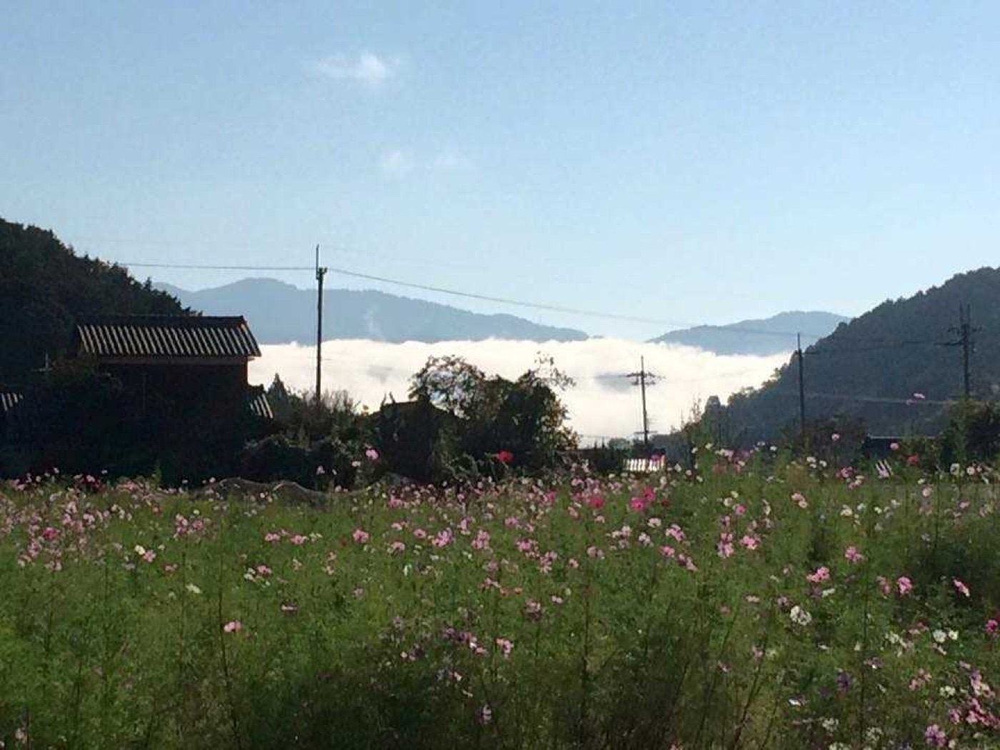
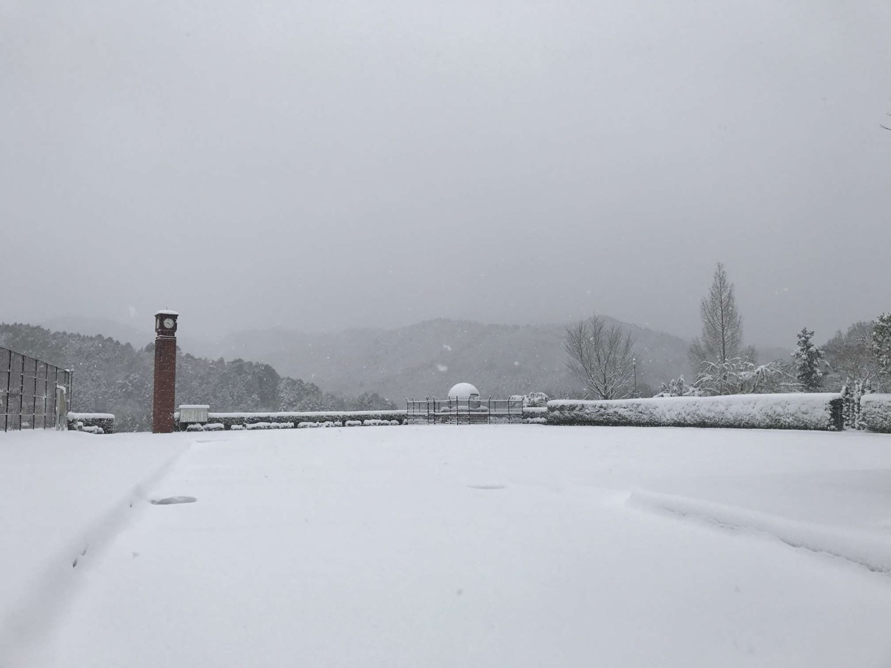
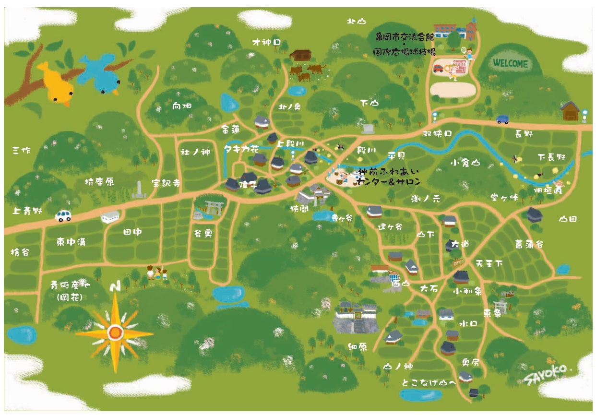

棚田と里山にいだかれた、約142軒の集落。
四季の実りと、人の手が守ってきた風景があります。A hamlet of about 142 households, cradled by terraced rice fields and satoyama woodland.
Here the seasons bring their harvests, and the landscape has been kept alive by human hands.
京都の市街地から車で小一時間。亀岡の山あいに、神前（こうざき）という集落があります。142戸・約380人の里。水を張れば空を映す棚田、ホタルの舞う千々川の源流、季節ごとに実る畑。ここには、暮らしと風景を守り続けてきた人たちがいます。A little under an hour by car from central Kyoto, tucked into the hills of Kameoka, lies a hamlet called Kouzaki. A place of 142 households and around 380 people. Terraced rice fields that mirror the sky once they are flooded, the headwaters of the Chiji River where fireflies dance, fields that ripen with each passing season. And here, the people who have gone on tending both the land and the life upon it.
派手な観光地ではありません。けれど、日本の農村の原風景がそのまま残っています。This is no showy tourist spot. What it holds instead is the original face of the Japanese countryside, still very much intact.
山の斜面に沿って重なる棚田。とくに東神前・山の神地区の眺めは格別で、ここで育つ「神前米」は高く評価されています。Terraces stacked one above the next along the mountainside. The view around Higashi-Kouzaki and Yamanokami is something special, and the Kouzaki rice grown here is held in high regard.
千々川の源流にあたり、水がきれい。初夏の夜にはホタルが舞い、6月初旬には「ホタルウォーク」も開かれます。Sitting at the source of the Chiji River, the water here runs clean. On early-summer nights the fireflies come out, and in early June the village holds a "Firefly Walk."
集落を包む里山と、こんもりとした社の杜。人が手を入れることで守られてきた、生きた自然です。The satoyama (community woodland) that wraps around the hamlet, and the dense grove of the shrine. This is living nature, kept as it is precisely because people keep tending to it.
神前の山からは、刃物を研ぐ天然砥石が採れます。集落の一角、亀岡市交流会館の「天然砥石館」で、その奥深い世界に触れられます。The hills of Kouzaki yield natural whetstones for sharpening blades. In one corner of the hamlet, the Natural Whetstone Museum at the Kameoka Exchange Hall opens up this surprisingly deep world.
木立にハンモックを吊るして、演奏に耳をかたむける。「音楽家のいる村」ならではの、森の音楽会が開かれることもあります。Hammocks strung between the trees, ears turned to the music. Now and then the village hosts a forest concert — something only "a village with resident musicians" could offer.
お寺での座禅体験には、海外からの参加者の姿も。文化財や寺社が、暮らしのすぐそばにあります。Guests from overseas sometimes join the zazen sessions at the temple. Cultural treasures, temples, and shrines all sit right alongside daily life here.
地域の情報誌や記録をひもとくと、この小さな集落の奥行きが見えてきます。Leaf through the local newsletters and old records, and the depth of this small hamlet begins to show.
幕末の郷土誌『新編桑下漫録』は、大井神社の祭神が保津の急流を鯉に乗ってさかのぼった伝えとともに、「神を先達て見奉るとの心にて神前村と号す」と記しています。神様をいちばん先にお迎えする里。読みは「こうざき」です。A local chronicle from the close of the Edo period tells how the deity of Oi Shrine rode a carp up the rapids of Hozu, and records that the village was named Kouzaki "in the spirit of being the first to look upon and receive the god." A village that welcomes the deity before anyone else. It is read "Kouzaki."
大正8年の新嘗祭、そして昭和3年の即位大礼。神前の米は二度、宮中に献上され、その賞状がいまも残っています。平成28年の全国育樹祭でも「京都・神前米」が献上され、大正・昭和・平成と三代にわたる「献上米の里」になりました。At the harvest festival of 1919, and again at the enthronement ceremony of 1928, Kouzaki rice was presented to the Imperial Court — the certificates survive to this day. In 2016, "Kyoto Kouzaki rice" was offered once more at the National Tree-Planting Festival, making this a village of tribute rice spanning the Taisho, Showa, and Heisei eras.
岡花で採れた天然砥石「青砥」は室町時代から知られ、最盛期には500人が働いたと伝わります。採掘は昭和35年に途絶えましたが、2009年、住民の手で「青砥復活プロジェクト」が実現。研ぎあげた砥石は朝市で売り切れ、全国から問い合わせが届きました。The natural whetstone "Aoto," quarried at Okabana, has been known since the Muromachi period; at its height some 500 people are said to have worked the mines. Quarrying ceased in 1960, but in 2009 the residents brought it back to life with an "Aoto Revival Project." The finished stones sold out at the morning market, and inquiries arrived from across the country.
曹渓山宝林寺の九重石塔は、鎌倉時代の作と伝わる国指定重要文化財。薬師・釈迦・阿弥陀の三如来も伝わり、毎年9月8日の「お薬師さん」で拝観できます。秋には門前の大イチョウが黄金色に染まります。The nine-tiered stone pagoda at Sokeizan Hourin-ji, thought to date to the Kamakura period, is a nationally designated Important Cultural Property. The temple also keeps three Buddhas — Yakushi, Shaka, and Amida — which can be viewed each year on September 8 at the "Oyakushi-san" festival. In autumn the great ginkgo before the gate turns a deep gold.




写真は、2006年の創刊から100号を超えて毎月発行されてきた地域の情報誌「ロハスなたより」から。村の日々を、住民自身が記録し続けています。These photographs come from "Lohas na Tayori," the local newsletter that has appeared every month since it launched in 2006, now past its hundredth issue. The residents themselves keep on recording the village's daily life.
2006年の創刊号から第99号まで、201ページを収録。表紙から選ぶほか、本文中の言葉でも検索できます。Browse 201 pages from the first issue in 2006 through issue 99, or search across the full text.
米づくりを軸に、この土地ならではの作物が育ちます。With rice growing at its heart, this land raises crops all its own.
神前を代表する特産。縁起物としても親しまれる、この地の名物です。Chorogi (Chinese artichoke), the signature specialty of Kouzaki — a local emblem, cherished too as a token of good fortune.
棚田で育つお米。集落の暮らしと風景を、長く支えてきました。Rice grown on the terraced fields, long the mainstay of the hamlet's life and its landscape.
とうもろこし狩りなどの収穫体験も行われてきました。Hands-on harvests, corn-picking among them, have long been part of the season here.
京都を代表する野菜のひとつ。収穫体験でも人気です。One of Kyoto's signature vegetables, and a favorite of the harvest-day visitors.
チョロギは、おせち料理にも使われる小さな縁起物。「長老喜」「千代呂木」などの字を当てて、長寿を願う食べものとして親しまれてきました。神前での栽培は2010年、薬草の勉強会をきっかけに始まり、お菓子など17種類もの加工品が生まれています。Chorogi (Chinese artichoke) is a small good-luck food that appears in New Year's dishes. Written with characters that read as "elder's joy" or "a thousand generations," it has long been eaten as a wish for long life. Cultivation in Kouzaki began in 2010, sparked by a medicinal-herb study group, and has since given rise to seventeen kinds of processed goods, sweets among them.
その名は、集落の看板にもなってきました。2016年には、その名を冠したNPO法人「チョロギ村」が生まれ、「高齢者が生き生きと健康に過ごせる村づくり」を掲げて、交流館での直売やレストランが村のにぎわいの場になりました。京都大学とのワークショップでも、2022年のテーマは「Society 5.0時代のチョロギ村づくり」。法人としての活動は、いまはひと区切りを迎えていますが、住民の意見交換では「チョロギを活かした新商品開発」がいまも話題に挙がります。The name has become something of a banner for the hamlet. In 2016 a nonprofit called "Chorogi Village" was founded under that name, built around the idea of village-making where older people can live active, healthy lives; its direct-sales stand and restaurant at the exchange hall became a gathering place. In the Kyoto University workshops too, the 2022 theme was "Chorogi village-making in the age of Society 5.0." The nonprofit's work has reached a pause for now, yet in the residents' discussions, "new products made from chorogi" still comes up.
神前の風景は、ひとりでに残ってきたわけではありません。地域の人たちの手と、外との出会いが、少しずつ積み重なってきました。The landscape of Kouzaki did not survive on its own. It has been built up little by little — through the hands of local people, and through encounters with the world beyond.
棚田・里山・行事・景観を守る、地域の有志の会。毎週日曜の「ふれあい朝市」や、初夏のホタルウォークなど、暮らしの中の営みを続けてきました。A volunteer group that looks after the terraces, the satoyama, the local events, and the scenery. From the Sunday morning market to the early-summer Firefly Walk, they have kept these small rituals of daily life going.
国の農地・水・環境保全向上対策を機に発足。同じ年、村田製作所との森づくり「モデルフォレスト」が府内第一号として神前で始まり、翌年には農業農村整備優良地区コンクールで全国水土里ネット会長賞を受賞しました。Founded on the back of a national program for conserving farmland, water, and the environment. That same year, a forest-building partnership with Murata Manufacturing, the "Model Forest," began in Kouzaki as the first of its kind in the prefecture; the following year the village won the national Mizu-Tochi-Net Chairman's Award in the competition for outstanding rural improvement districts.
守る会の活動を京都大学の研究グループが視察に訪れたのが、縁の始まり。翌2011年からは共同研究として、iPadとFacebookを使った村からの情報発信が始まりました。The tie began when a research group from Kyoto University came to observe the society's work. From 2011, as a joint project, the village started sharing news of its own using iPads and Facebook.
京大生31名が初めて神前を訪れ、集落を歩いて将来ビジョンを提案しました。以来、コロナ禍の中断をはさみながら毎年続いています。これまでのあゆみ →Thirty-one Kyoto University students visited Kouzaki for the first time, walking the hamlet and proposing a vision for its future. It has continued every year since, with only a pause during the pandemic. The story so far →
2014年の区総会で確認された「神前チョロギ村」構想は、20回を超えるリーダー会議を経て、NPO法人チョロギ村として実を結びました。ゆるキャラ「チョロばあ」が生まれたのもこの頃です。Endorsed at the 2014 district assembly, the "Kouzaki Chorogi Village" concept passed through more than twenty leaders' meetings before bearing fruit as the nonprofit Chorogi Village. The mascot "Choro-baa" was born around this time too.
集落の農業の将来計画が承認されました。土台になったのは、全農家アンケート（回収率100%）。京都大学とのワークショップも、取組のひとつとして明記されています。The hamlet's long-term farming plan was approved, built on a survey of every farm household (a 100% response rate). The workshops with Kyoto University are named in it as one of the ongoing efforts.
コロナ禍を経て、学生が集落を歩き、隠れた魅力と課題を見つけるワークショップを再開しました。この年のテーマのひとつは「Society 5.0時代のチョロギ村づくり」でした。この年の記録 →After the pandemic, the students returned — walking the hamlet, seeking out its hidden charms and its problems. One of that year's themes was "Chorogi village-making in the age of Society 5.0." That year's record →
学生がバーチャルリアリティ（VR）を使い、神前の風景を新しい形で記録。チョロギ村での交流もありました。この年の記録 →The students used virtual reality to capture the landscape of Kouzaki in a new way, along with some time spent together at Chorogi Village. That year's record →
学生チームが神前の資源をあらためて見つめ直し、地域を元気にするアイデアを提案しました。この年の記録 →The student teams took a fresh look at Kouzaki's assets and put forward ideas to bring new energy to the community. That year's record →
AIと全戸アンケートを使い、142軒すべてに声をかけました。住民のみなさんへの報告 →Using AI and a survey of every household, we reached out to all 142 homes. Report to the residents →
集まった声をもとに、無理のない村づくりを、これからも一緒に考えていきます。今年のワークショップは2026年7月12日（日）です。ご案内 →Drawing on the voices we gathered, we will go on thinking together about a kind of village-making that doesn't overstretch anyone. This year's workshop is on Sunday, July 12, 2026. Details →
高齢化や担い手不足に向き合いながらも、地域の人たちは手を止めていません。全戸を回って集めた声と、4つのむらづくり案の受け止めをまとめました。Facing an aging population and a shortage of hands, the people here have not stopped working. We have gathered the voices collected door to door, along with how residents responded to four village-making proposals.
※ おでかけの際は、バスの時刻を事前にご確認ください。Please check the bus timetable before you set out.
地域のみなさんの手で描き起こされた、あたたかいイラストの神前マップ。タキカ花、杭座原、堂ヶ峠——昔からの字名がひとつずつ描き込まれ、ふれあいセンター＆サロンも、お寺も神社も、ちゃんとこの中にあります。画像を押すと大きく表示されます。A warm, hand-drawn illustrated map of Kouzaki, put together by the people who live here. Takikabana, Kuizahara, Dougatouge — the old place-names are written in one by one, and the Fureai Center and salon, the temple, and the shrine are all there in it. Tap the image to see it larger.

季節の風景や地域の出来事は、Facebookページでも発信されています。Seasonal scenes and goings-on around the village are also shared on the Facebook page.